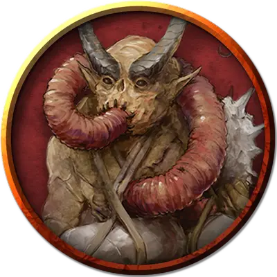

Мясной голем исчадий
Fiendish Flesh Golem
Большой Конструкт, без мировоззрения

Класс Доспеха 12 (природный доспех)
Хиты 210 (20к10 + 100)
Скорость 30 футов, летая 30 футов (парит)
| мод | спас | ||
|---|---|---|---|
| СИЛ | 20 | +5 | +5 |
| ЛОВ | 9 | −1 | −1 |
| ТЕЛ | 20 | +5 | +5 |
| мод | спас | ||
|---|---|---|---|
| ИНТ | 7 | −2 | −2 |
| МДР | 10 | +0 | +0 |
| ХАР | 5 | −3 | −3 |
Сопротивление урону огонь, холод
Иммунитет к урону электричество, яд; дробящий, колющий, рубящий от немагических атак, кроме нанесённых посеребрённым или адамантиновым оружием
Иммунитет к состояниям паралич, очарование, отравление, окаменение, истощение, испуг
Чувства тёмное зрение 60 футов, пассивное Восприятие 10
Языки понимает языки своего создателя, но не говорит
Опасность 8 (3900 опыта)
Бонус мастерства +3
Особенности
Берсерк. Каждый раз, когда голем начинает ход с 100 или меньше хитами, бросайте к6. Если выпадет «6», голем становится берсерком. Будучи берсерком, он в каждом своем ходу атакует ближайшее видимое существо. Если поблизости нет существ, к которым можно подойти и атаковать, голем атакует предмет, предпочитая предметы с размером меньше своего. Став берсерком, голем остается им, пока его не уничтожат или пока он не восстановит все свои хиты.
Создатель голема, находящийся в пределах 60 футов от ставшего берсерком голема, может попытаться успокоить его, отдавая четкие команды убедительным голосом. Голем должен слышать создателя, который действием совершает проверку Харизмы (Убеждение) Сл 15. При успехе голем перестает быть берсерком. Если голем получает урон, когда у него 40 или меньше хитов, он может снова стать берсерком.
Неизменяемая форма. Голем обладает иммунитетом ко всем заклинаниям и эффектам, изменяющим его форму.
Поглощение электричества. Каждый раз, когда голем должен получить урон электричеством, он не получает урон, и вместо этого восстанавливает число хитов, равное причиняемому урону электричеством.
Сопротивление магии. Голем совершает с преимуществом спасброски от заклинаний и прочих магических эффектов.
Магическое оружие. Атаки оружием голема являются магическими.
Действия
Мультиатака. Голем совершает два размашистых удара.
Размашистый удар. Рукопашная атака оружием: +8 к попаданию, досягаемость 5 футов, одна цель. Попадание: 16 (2к8 + 4) дробящего урона.
Описание
Этот крупный мясной голем сшит из частей тел дьяволов, демонов, юголотов и прочих бестий. Поскольку эти части могли принадлежать разным существам и быть скомбинированными по-разному, не бывает двух одинаковых големов. Ночные карги владеют секретом создания таких големов и редко с кем им делятся.
У некоторых таких мясных големов есть крылья. Однако магия, создавшая их, позволяет летать и парить даже без крыльев.